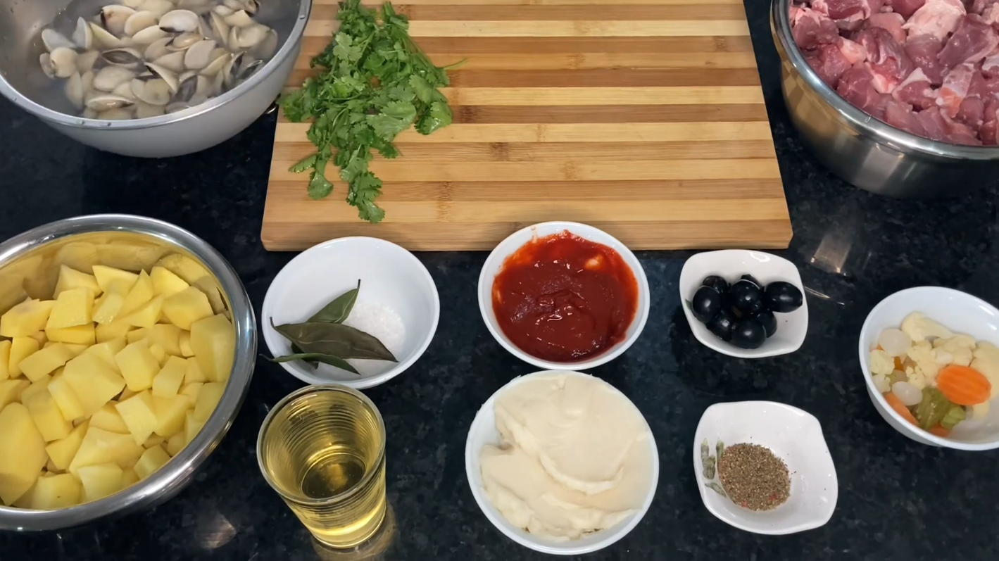
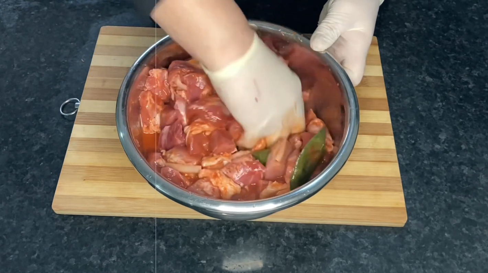
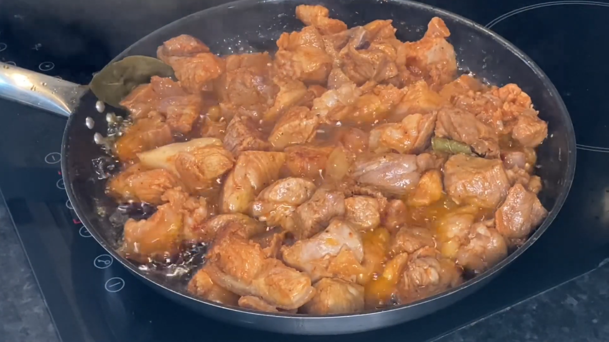
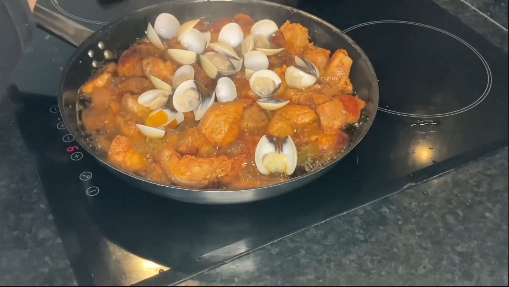

Tempere a carne com sal, pimentão doce e cominhos. Junte o sumo de limão e os alhos laminados. Envolva bem.
Coloque a carne num tacho ou frigideira grande, regue com azeite generosamente e leve ao lume.
No início a carne irá largar água, que depois irá se evaporar, ficando apenas o azeite. Nessa altura irá começar a fritar. Deixe-a fritar bem.
Nessa altura, junte as amêijoas, envolvendo-as bem. Tape o tacho ou frigideira, para que as amêijoas abram.
Quando estiverem abertas, deligue o lume, polvilhe com coentros picados, distribua gomos de limão por cima e sirva de seguida.




Dúvidas sobre Carne de porco alentejana
Por que a carne de porco à alentejana leva amêijoas?
A carne de porco à alentejana é um prato típico de Portugal que combina carne de porco com amêijoas, uma fusão pouco comum, mas muito tradicional. A origem está ligada à região do Alentejo, embora o prato tenha influências algarvias, sobretudo pelo uso dos mariscos. As amêijoas acrescentam um sabor salgado e fresco do mar que equilibra a intensidade da carne marinada. Essa combinação é o que torna o prato único e tão apreciado. Além disso, simboliza a riqueza gastronômica portuguesa, que valoriza contrastes de sabores e produtos locais.
Qual o melhor tipo de carne para carne de porco à alentejana?
Para uma carne de porco à alentejana saborosa e suculenta, o ideal é usar carne de porco magra mas com alguma gordura, como o lombo ou a pá (ombro). Essas peças absorvem bem a marinada, garantindo sabor e textura tenra após o cozimento. Evite cortes muito secos ou duros. Se possível, opte por carne de porco de qualidade, como a de porco preto alentejano, que realça ainda mais o sabor tradicional do prato.
Como limpar as amêijoas antes de usar na carne de porco à alentejana?
Antes de usar as amêijoas na carne de porco à alentejana, é fundamental limpá-las bem para evitar areia no prato. Coloque-as de molho em água fria com sal durante 1 a 2 horas, trocando a água pelo menos uma vez. Algumas pessoas também adicionam farinha à água para ajudar as amêijoas a libertarem impurezas. Após esse processo, lave-as bem em água corrente. Só use amêijoas que se mantêm fechadas antes de cozinhar — as abertas devem ser descartadas.
É possível preparar carne de porco à alentejana sem amêijoas?
Sim, é possível fazer uma versão adaptada da carne de porco à alentejana sem amêijoas, especialmente para quem tem alergia a mariscos ou não aprecia o sabor. O prato perde a combinação terra-mar, mas continua saboroso graças à marinada rica em alho, pimentão e vinho branco. Para manter um toque especial, pode-se adicionar azeitonas, pickles ou coentros frescos no final. Essa variação mantém a essência do prato, mas com um perfil mais carnívoro.
O que servir como acompanhamento da carne de porco à alentejana?
Tradicionalmente, a carne de porco à alentejana é servida com batatas fritas em cubos, bem douradas por fora e macias por dentro. Também combina bem com arroz branco ou saladas simples de alface e tomate, que equilibram os sabores intensos do prato. Uma fatia de pão alentejano é ótima para aproveitar o molho. Se quiser inovar, legumes salteados ou purê de batata também podem ser boas opções.